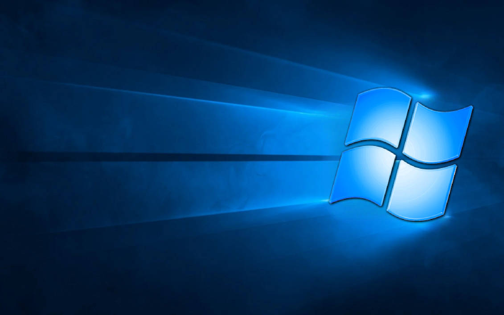

Hero7
The Windows Hero Wallpaper, 7ified
{kind=link}
About Hero7
Hero7 is a version of the Windows 10 "Hero" Wallpaper, modified to use the Windows 7 window shape.
Why Hero7 Was Made
For a while, I wanted to find a version of the original Hero wallpaper, but using the Windows 7 design, rather than Windows 10.
I spent a while searching online, but I couldn't find what I was looking for. I got close, finding a version of the newer Hero wallpaper, but I wanted the older, more "foggy" Hero wallpaper.

There were versions that were similar to the original Hero style, but they just simply werent that great (no offense to the original artists).
They were good in their own way, but I wanted something more authentic, something more realistic, like how the real Hero wallpaper was made. And since I couldn't find it online, I figured I'd make it myself

How Hero7 Was Made
First thing I did was study how Microsoft made the original Wallpaper, and recreate the setup roughly in Blender. This was by far the easiest part.
I then did the shape swap from Windows 10 to Windows 7, Using the same warping the Windows 10 shape had

.png)
.png)
.png)
I knew going into this project that the lighting would be excruciating to get right, because I was attempting to recreate a physical set digitally.
I figured the best place to start was fog, and a spotlight behind the window. This got me a lot of the effect pretty easily.
.png)
.png)
Next was the lasers coming from behind the window. This was done using area lights, with their spread set to 0.
To get the perspective effect, the area lights were placed at the same spot as the spotlight, and angled so it would barely go through the corners of the window panels.
The "bloom" effect where the lasers meet the panels are actually just spotlights, which I found most closely represented how they looked in the original.
Now that all the major elements were in place, I spent a lot of time just tweaking the lights until it looked just right. This was by far the most time consuming part of the project.
The project in total took roughly 10 hours to complete, and this step alone took around 5 and a half.
After all the tweaks were finished, it was render ready, but it wasn't quite good enough yet. An additional Photoshop pass was needed to add in the minor detials that you could easilly miss if you didn't have the original to compare to.
.png)
The best part about making this wallpaper in blender, is I have a 3D view of the set, much like Microsoft did when making the original Hero.
Here is the scene from different angles, as well as the finished wallpaper.
While I won't stop you from redistributing this wallpaper, I do ask that you credit me.
.png)
.png)